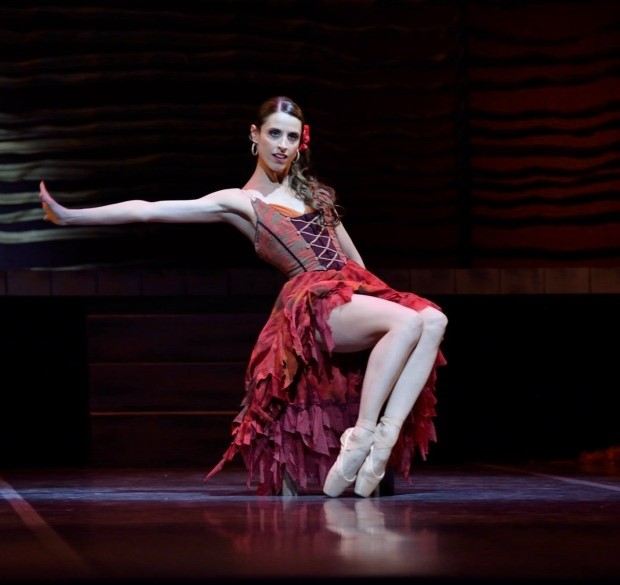

El ballet Carmen está basado en la famosa ópera de Georges Bizet, que a su vez se inspira en la novela de Prosper Mérimée. La trama se desarrolla en Sevilla, donde Carmen, una gitana seductora que trabaja en un burdel, es arrestada tras una pelea, pero logra escapar con la ayuda de un cómplice, Don José, un soldado que, cautivado por ella, abandona su carrera y se enamora profundamente. A medida que su relación avanza, Carmen se enamora también del torero Escamillo, lo que desencadena los celos y la obsesión de Don José. En un final trágico, Don José asesina a Carmen en un duelo a muerte mientras el público vitorea al torero. La historia está marcada por la pasión, la traición y el destino fatal de la protagonista.


One of three columns